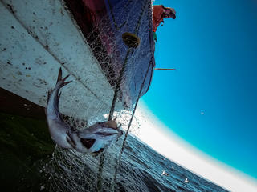
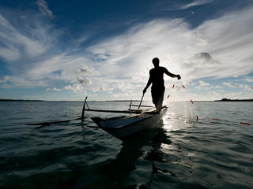
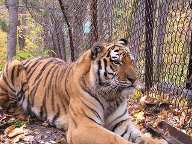

Estándares universales para la trazabilidad de mariscos
El océano ofrece una gran cantidad de mariscos, apoyando cientos de millones de empleos y alimentando a
miles de millones de personas. Pero aproximadamente una cuarta parte del pescado capturado en todo el mundo
se hace ilegalmente en las sombras, alimentando un mercado negro que explota la vida silvestre, las personas
y los puntos ciegos en la aplicación de las leyes. La falta de transparencia permite que las embarcaciones
deshonestas y las redes criminales operen sin ser detectadas y se beneficien del pescado robado, sacando
dinero de los bolsillos de las personas que siguen las reglas y contribuyendo a la disminución de la salud
de los océanos. Poner fin a este comercio de mariscos en el mercado negro es bueno para la naturaleza y las
personas, pero requerirá una variedad de herramientas comprobadas que funcionan en conjunto, la principal de
ellas es la trazabilidad.

Las flotas atuneras de Pakistán lideran los esfuerzos para desenredar nuestros océanos
Como parte del Proyecto de Atún ABNJ de los Océanos Comunes, WWF está trabajando a bordo con las
tripulaciones de los buques para mejorar los informes científicos y ajustar las prácticas de redes de
enmalle para monitorear y reducir la captura incidental. Este proyecto demostró que las tripulaciones de
embarcaciones, posicionadas de manera única al comienzo de la cadena de suministro, pueden ser agentes
efectivos para desarrollar mejoras en las mejores prácticas e implementarlas con éxito en general.

Cerrar las granjas de tigres
Las "granjas" de tigres son instalaciones cautivas que crían tigres para suministrar o participar
directamente en el comercio de partes o productos de tigres. WWF está pidiendo una mayor supervisión y
protección de todos los tigres cautivos.